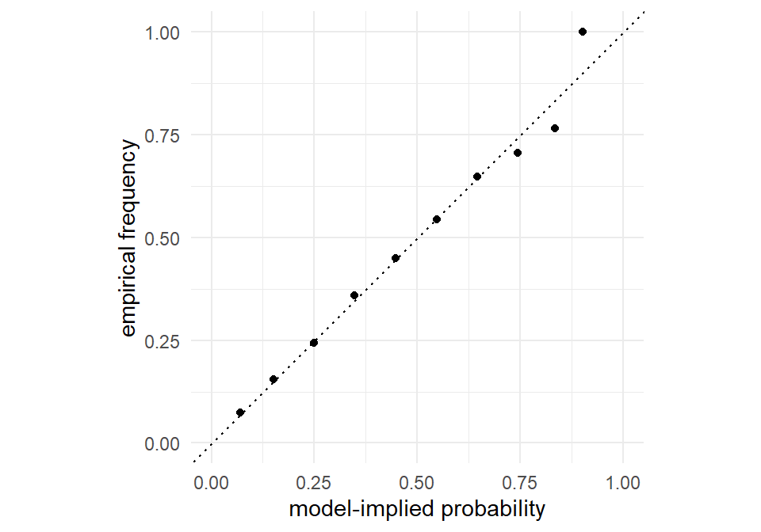

Part I practiced on binary choices — buy the laptop or don’t. Real choice sets are richer: the shopper in our study faces three laptops per task, and the shopper in a store faces dozens. This chapter introduces the model that dominates the analysis of such data, in academic research and industry practice alike: the multinomial logit (MNL). By the chapter’s end, the full laptop study of Section 1.4 will exist as data on your machine — simulated from the MNL with known parameters, organized by the tools of Chapter 4, and waiting for the estimator we build in Chapter 8.
The MNL earned its dominance honestly. Its choice probabilities have a closed form — the exceptional case, as Chapter 1 taught — which makes estimation fast and stable. Its parameters read naturally as marginal utilities. And it is the seed from which everything else in this book grows: the nested logit (Chapter 10), the latent class model (Chapter 11), the mixed logit (Chapter 13), and the hierarchical Bayesian models (Chapter 17) are all the MNL with one assumption relaxed. Learn this model deeply and the rest of the book is variations on a theme.
7.1 From Two Alternatives to Many
The random utility construction of Section 1.3 generalizes without friction. Decision-maker \(n\) in choice situation \(t\) faces \(J\) alternatives; each alternative \(j\) carries a utility
where \(\mathbf{x}_{ntj}\) is the attribute vector of alternative \(j\) in that situation — one row of the long-format data of Chapter 4 — and \(\varepsilon_{ntj}\) collects everything about that alternative, that person, and that moment that we do not observe. The behavioral rule is maximization:
The observed choice reveals which utility was largest — nothing more. That “nothing more” has teeth, and the identification section below counts them.
For the choice probability, the general recipe of Equation 1.1 applies: \(P_{ntj} = \Pr(U_{ntj} > U_{ntk} \; \forall k \neq j)\), an integral of the density of \(\boldsymbol{\varepsilon}_{nt}\) over the region where alternative \(j\) wins. What remains is to choose that density.
7.2 Random Utility and the Extreme Value Distribution
The MNL’s defining assumption is that the unobservables are independent draws from the Gumbel (Type I Extreme Value) distribution you met in Chapter 2:
Why this distribution, of all the shapes a density can take? Candor first: primarily because of what it delivers — with Gumbel errors, the choice-probability integral solves in closed form. The result (derived in two pages in Train 2009, sec. 3.10) is the most famous formula in discrete choice:
Exponentiate every representative utility, and each alternative’s probability is its share of the total. (Machine learning readers know this map as the softmax.) The formula respects everything a choice probability must — positive, summing to one, increasing in own-utility — and it is differentiable, cheap, and impossible to get numerically wrong in any interesting way. McFadden’s derivation of this form from utility maximization, and the empirical program it launched, is the subject of his Nobel lecture (McFadden 2001).
Two properties of the Gumbel family make the magic work, both of which we can verify rather than take on faith — the Chapter 2 toolkit was built for exactly this. First, the difference of two independent Gumbels is logistic (verified in Figure 2.5), which is why the \(J=2\) case of Equation 7.4 collapses to the binary logit of Section 1.3 — reassuring consistency. Second, the maximum of several Gumbel variables is itself Gumbel, shifted by the log of the sum of exponentiated locations — the property that makes the “which alternative wins” calculation tractable, and whose byproduct, the log-sum term \(\log \sum_{j'} e^{V_{j'}}\), will return twice with star billing: as the nested logit’s inclusive value (Chapter 10) and as the consumer-surplus measure behind willingness-to-pay calculations (Chapter 21).
The second property is a three-line pleasure to check rather than take on faith. If \(U_j = V_j + \varepsilon_j\) with \(\varepsilon_j\) independent standard Gumbel, then each \(U_j\) has CDF \(e^{-e^{-(u - V_j)}}\), and by independence \[\Pr\big(\max_j U_j \le u\big) = \prod_j e^{-e^{-(u - V_j)}} = \exp\Big(-e^{-u} \textstyle\sum_j e^{V_j}\Big) = \exp\Big(-e^{-(u - \log \sum_j e^{V_j})}\Big),\] which is again a Gumbel CDF, with location \(\log \sum_j e^{V_j}\) — the log-sum, born.
Rather than rely on the algebra, let’s watch Equation 7.4 emerge from raw simulation — the strongest sanity check we know (Section 3.5, level 3). Take one choice task from the laptop study: three profiles with representative utilities we fix by hand. Simulate the model’s mechanics — draw Gumbels, add, take the argmax — ten thousand times, and compare winning frequencies to the formula:
set.seed(70)V <-c(0.4, 1.1, -0.2) # representative utilities of 3 profilesR <-10000wins <-integer(3)for (r in1:R) { eps <--log(-log(runif(3))) # Gumbel draws, from first principles U <- V + eps j <-which.max(U) wins[j] <- wins[j] +1}rbind(simulated = wins / R,formula =exp(V) /sum(exp(V)))
Agreement to two-and-a-bit decimals, tightening with more draws. The closed form and the behavioral story — maximize noisy utilities — are the same model; Equation 7.4 is just the integral pre-computed for us.
7.3 The MNL Choice Probability in R
The formula deserves a function. Following the stacked-data conventions of Section 4.7 — utilities for all alternatives in a vector, tasks identified by a group index — here it is for a single choice situation:
One line. It hides one hazard: if some \(V\) is large — say 800, easy to produce with mis-scaled data — exp(800) overflows to Inf and the probabilities dissolve into NaN. The cure (subtract the maximum \(V\) before exponentiating, which changes nothing mathematically because the shift cancels in numerator and denominator) is the log-sum-exp trick, and we fold it into our likelihood code in Chapter 8 and dissect it in Chapter 9. Flagged now so it never surprises you.
7.4 Properties: What the MNL Assumes About Substitution
A model this convenient must be paying for it somewhere. The MNL’s bill arrives as a strong, sometimes wrong, restriction on how alternatives compete.
7.4.1 Independence from irrelevant alternatives
Take the ratio of any two alternatives’ probabilities under Equation 7.4:
Everything about every other alternative has canceled. The odds between the Apple and the Dell depend only on the Apple and the Dell — not on what else is in the task, how similar it is to either, or whether it exists at all. This property is independence from irrelevant alternatives (IIA), and it is a direct inheritance of assuming the \(\varepsilon\)’s independent: the model has no channel through which alternatives can share unobserved appeal.
Sometimes IIA is harmless, even welcome. Sometimes it is absurd, and the canonical absurdity is worth internalizing in numbers.1 A commuter chooses between a car (\(V_c\)) and a blue bus (\(V_b\)), with \(V_c = V_b\), so the model says 50/50. Now add a red bus — identical to the blue bus in every respect except paint, so \(V_r = V_b\). Common sense: bus riders split over paint colors, and shares go to \(\left(\tfrac{1}{2}, \tfrac{1}{4}, \tfrac{1}{4}\right)\). The MNL, constrained by Equation 7.5 to keep the car/blue-bus odds at 1:1, says \(\left(\tfrac{1}{3}, \tfrac{1}{3}, \tfrac{1}{3}\right)\) — painting a bus red steals a sixth of the car market:
$before
car blue_bus
0.5 0.5
$after
car blue_bus red_bus
0.3333333 0.3333333 0.3333333
The diagnosis is precise: the two buses share nearly all their unobserved utility (comfort with buses, no parking hassle), and independence of the \(\varepsilon\)’s is exactly the assumption that forbids the model from knowing it. The repairs form a tour of this book’s second half: let the \(\varepsilon\)’s correlate within groups (nested logit, Chapter 10), let coefficients vary across people so “bus people” exist (mixed logit, Chapter 13 — which breaks IIA in aggregate while keeping logit form for each individual), or let the errors correlate freely (probit, Chapter 18).
7.4.2 Proportional substitution
IIA’s flip side. Differentiate Equation 7.4 with respect to the utility of a different alternative \(j\): for \(k \ne j\), \(\partial P_k / \partial V_j = -e^{V_k} e^{V_j} / \big(\sum_l e^{V_l}\big)^2 = -P_k P_j\). If attribute \(z_j\) enters utility with coefficient \(\beta_z\), the chain rule gives a cross-elasticity of \(\frac{\partial P_k}{\partial z_j}\frac{z_j}{P_k} = -\beta_z z_j P_j\) — an expression with no \(k\) in it: when alternative \(j\) improves, every competitor’s share falls by the same percentage (Train 2009, sec. 3.6). That is proportional substitution. In our study: cut the Apple’s price and the model takes customers from Dell and Acer in proportion to their shares, never disproportionately from the other premium option. For the laptop study as designed this is defensible; for a study with two near-identical Dell configurations it would not be. Chapter 21 computes these elasticities explicitly, and Chapter 10 begins the repairs.
7.5 Identification: What Choices Can and Cannot Reveal
Before simulating data, we must be honest about what the data can possibly tell us. Equation 7.2 says choices reveal only which utility was largest. Two consequences follow, both previewed in Part I, both now precise. They are not pedantry: each corresponds to a specific way estimation code fails — parameters wandering without changing the likelihood — and each dictates a normalization our simulator and estimator must share, or recovery checks will “fail” mysteriously.
Only differences in utility matter. Add any constant \(c\) to every alternative’s utility in a task and the argmax — hence the choice, hence the probability (check it against Equation 7.4: \(e^c\) cancels) — is untouched. Absolute utility levels are unobservable. This is why the long-format data of Chapter 4 carry no common intercept column and why individual-specific variables need interactions to matter (Chapter 4 made both points structurally; here is their behavioral root). It is also why labeled designs include ASCs for \(J-1\) alternatives, never all \(J\): the last one’s level is the reference against which differences are measured.
The scale of utility is arbitrary. Multiply all utilities — systematic parts and errors alike — by any \(\alpha > 0\) and the argmax is again untouched. So the data cannot pin down the error variance separately from the magnitude of \(\boldsymbol{\beta}\); something must be fixed by convention, and the MNL convention is to fix the Gumbel errors at their standard variance, \(\pi^2/6\). Every coefficient is therefore measured relative to the fixed scale of the Gumbel noise (whose standard deviation is \(\pi/\sqrt{6} \approx 1.28\)) — \(\beta_{\text{price}} = -1.2\) means “a $1,000 price increase moves utility by 1.2 units on a scale where the unobserved noise has standard deviation about 1.3,” not any absolute quantity. Three practical corollaries, in ascending order of how often they bite researchers:
Coefficients from models with different error scales are not comparable — the binary probit’s \(\boldsymbol{\beta}\) (errors scaled to variance 1) and binary logit’s \(\boldsymbol{\beta}\) (variance \(\pi^2/3\)) differ by a factor of about 1.8 for the same behavior, resolving the puzzle flagged in Chapter 3’s footnote.
Coefficients estimated on two datasets can differ purely because choice consistency differs — noisier respondents shrink every coefficient toward zero together. Comparing across samples requires care (Chapter 21).
Ratios of coefficients are scale-free — \(\alpha\) cancels — which is precisely why willingness-to-pay, a ratio with the price coefficient in the denominator, is the preferred currency for interpreting estimates (Chapter 21).
Neither normalization is a limitation of the MNL; both are limitations of choice data, and they will reappear verbatim in the probit (Chapter 18), where getting them wrong is the classic implementation failure.
7.6 Simulating the Laptop Study
Assembly time. We have the design generator (sim_laptop_design(), Section 4.6), the data organizer (build_choice_data(), Section 4.7), the error generator (the Gumbel one-liner, Chapter 2), and the behavioral rule (Equation 7.2). The full true parameter vector for the study, extending Section 1.4’s binary seed to all six attributes — and now fixed for the rest of the book:
Reasonable preferences: brands ordered Acer \(\prec\) Dell \(\prec\) Apple, more memory better with diminishing returns, mild taste for the larger screen, and the familiar price distaste. The simulator packages the six-step anatomy of Chapter 3, with the argmax-within-task as the one genuinely new move:
sim_laptop_design <-function(N, T, J) { # from @sec-data n_rows <- N * T * Jdata.frame(id =rep(seq_len(N), each = T * J),task =rep(rep(seq_len(T), each = J), times = N),alt =rep(seq_len(J), times = N * T),brand =factor(sample(c("Acer","Dell","Apple"), n_rows, replace =TRUE),levels =c("Acer","Dell","Apple")),ram =factor(sample(c("8","16","32"), n_rows, replace =TRUE),levels =c("8","16","32")),screen =factor(sample(c("13","15"), n_rows, replace =TRUE),levels =c("13","15")),price =round(runif(n_rows, min =0.8, max =2.4), 2) )}sim_mnl_data <-function(N, T, J, beta) { df <-sim_laptop_design(N, T, J) X <-model.matrix(~ brand + ram + screen + price, data = df)[, -1]stopifnot(ncol(X) ==length(beta)) task_id <-cumsum(!duplicated(df[, c("id", "task")])) eps <--log(-log(runif(nrow(df)))) # Gumbel, one per utility U <-as.vector(X %*% beta) + eps df$choice <-as.integer(ave(U, task_id,FUN =function(u) u ==max(u))) df}set.seed(71)beta_true <-c(dell =0.5, apple =1.0, ram16 =0.6,ram32 =0.9, screen15 =0.3, price =-1.2)laptops <-sim_mnl_data(N =500, T =8, J =3, beta = beta_true)head(laptops, 3)
id task alt brand ram screen price choice
1 1 1 1 Apple 32 13 1.21 1
2 1 1 2 Apple 16 13 1.14 0
3 1 1 3 Dell 16 13 2.27 0
The ave(U, task_id, FUN = ...) idiom deserves a sentence, since it is how the argmax respects the data’s group structure: within each task_id group it flags the row achieving the group maximum, returning the flags in the original row order — Equation 7.2 executed group-wise on stacked data, no loop required.2
Now the checking discipline of Section 3.5 — more important than ever, since these data underwrite the next seven chapters. Marginal shares first: with brands randomly assigned to profiles, brand choice shares should order as the brand coefficients do:
Acer \(\prec\) Dell \(\prec\) Apple, as \((0, 0.5, 1.0)\) commands. Directional price check: chosen laptops should be cheaper on average than rejected ones —
tapply(laptops$price, laptops$choice, mean)
0 1
1.675466 1.470368
— and they are, by about $205. Finally the level-3 check, empirical frequencies against the closed form. We bin tasks by the model-implied probability of their first alternative, then ask how often that alternative was actually chosen — a calibration check that the simulation honors Equation 7.4 across its whole range:
X <-model.matrix(~ brand + ram + screen + price, data = laptops)[, -1]task_id <-cumsum(!duplicated(laptops[, c("id", "task")]))eV <-exp(as.vector(X %*% beta_true))P <- eV /rowsum(eV, task_id)[task_id] # eq-mnl-prob, all rows at oncebins <-cut(P, breaks =seq(0, 1, by =0.1))cal <-data.frame(implied =tapply(P, bins, mean),observed =tapply(laptops$choice, bins, mean))ggplot(cal, aes(implied, observed)) +geom_abline(linetype ="dotted") +geom_point() +coord_equal(xlim =c(0, 1), ylim =c(0, 1)) +labs(x ="model-implied probability", y ="empirical frequency")

Figure 7.1: Calibration of the simulated laptop study: model-implied choice probabilities (x) against empirical choice frequencies (y), tasks binned by implied probability. Points on the 45-degree line mean the simulator implements the MNL it claims to.
Dead on the diagonal. Two moves in that chunk foreshadow the next chapter: rowsum(eV, task_id) computed all 4,000 tasks’ logit denominators in one grouped operation, and indexing the result by task_id broadcast them back to the rows — the exact computational pattern at the heart of the vectorized MNL log-likelihood. You have now effectively seen Chapter 8’s inner loop.
The study is fielded. One housekeeping step: since every remaining chapter of Part II (and several beyond) analyzes exactly this dataset, we save it — data and answer key together — so later chapters can load it rather than re-simulate it. One dataset, one truth, one thread of examples:
In the drawer sit laptops — 4,000 choices by 500 respondents — and, because we are the simulator as well as the analyst, the answer key Equation 7.6. Time to forget we know it.
7.7 Key Learnings
The MNL assigns Gumbel errors to linear-in-parameters utilities (Equation 7.1, Equation 7.3); maximization then yields the closed-form softmax probabilities of Equation 7.4 — which we verified by simulating the model’s raw mechanics, not by trusting algebra.
The Gumbel’s gifts: differences are logistic (binary logit as the \(J=2\) special case) and maxima are Gumbel (source of the log-sum term that returns in Chapter 10 and Chapter 21).
The price of the closed form is IIA (Equation 7.5): odds between two alternatives ignore all others, so substitution is proportional to shares — absurd for near-clones (red bus/blue bus) and the motivation for the nested, mixed, and probit models ahead.
Choices reveal only the argmax, so utility levels (add a constant: nothing) and utility scale (multiply by \(\alpha\): nothing) are unidentifiable. Coefficients are measured on the arbitrary, convention-fixed logit scale; only their ratios are scale-free — the seed of willingness-to-pay.
The laptop study now exists: sim_mnl_data() composes the design (Chapter 4), Gumbel draws (Chapter 2), and group-wise argmax into 4,000 simulated choices at \(\boldsymbol{\beta}^\ast\) (Equation 7.6), and the data passed marginal, directional, and calibration checks.
The calibration figure’s rowsum()/broadcast pattern is the vectorized MNL likelihood computation — Chapter 8 makes it official.
The red-bus/blue-bus parable is due to McFadden; Train (2009) Section 3.3.2 discusses it alongside cases where IIA is realistic. The parable is extreme by design — perfect substitutes — but the failure it dramatizes is graded: the more two alternatives share unobserved appeal, the worse the MNL’s substitution arithmetic.↩︎
With continuous errors, ties occur with probability zero, so exactly one row per task is flagged. Verify: all(rowsum(laptops$choice, cumsum(!duplicated(laptops[, c("id","task")]))) == 1) returns TRUE.↩︎